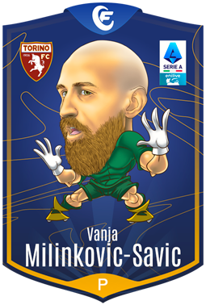

Informazioni: Nazionalità:
Serbia
Età:
28
Altezza:
202 cm
Piede preferito:
Destro
Statistiche:
Presenze :37
Parate:135
Clean Sheet:10
Goal subiti:42
Rigori parati:4
Rigori subiti:3
Informazioni:
Nazionalità:
Serbia
Età:
25[27 ago 1999]
Altezza:
189 cm
Piede preferito:
Destro
Statistiche:
Presenze:38
Parate:118
Clean Sheet:16
Goal subiti:35
Rigori parati:0
Rigori subiti:4
Informazioni:
Nazionalità:
Spagna
Età:
34[7 nov 1990]
Altezza:
192 cm
Piede preferito:
Destro
Statistiche:
Presenze:35
Parate:98
Clean Sheet:11
Goal subiti:38
Rigori parati:2
Rigori subiti:1